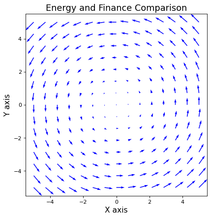
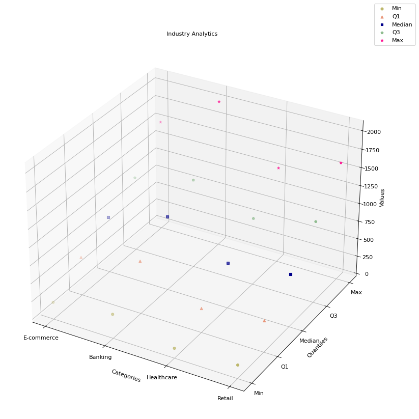
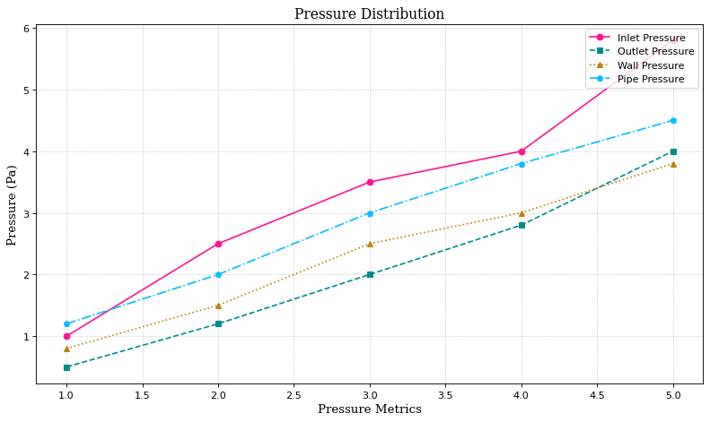

Total failure cases of factor "combination": 4
| ID | Chart | Question | Additional Information | Pitfalls | Most relevant pitfall |
128.png |
 |
The quiver arrows are colored blue, and the chart's title is 'Energy and Finance Comparison'. How would you describe the visual appearance of the chart?
|
{
"Ground Truth": "The chart appears as a blue vector field with the mentioned title.",
"Prediction": "<Quiver>"
}
|
### Identification of Potential Pitfalls:
1. **Overemphasis on the Diagram Type**:
- The model may have focused too much on identifying the specific type of plot (a quiver plot) rather than describing its visual characteristics.
2. **Lack of Contextual Description**:
- The model might not have adequately integrated the overall visual context, such as the color, title, and general appearance of the chart into its description.
3. **Insufficient Interpretation of Visual Elements**:
- The model could have failed to interpret how the blue arrows collectively form a "vector field" and how this aligns with the chart's title.
4. **Inadequate Attention to Title and Labels**:
- The model may have overlooked the importance of the title ("Energy and Finance Comparison") in conveying the purpose or context of the visualization.
### Most Relevant Pitfall:
The most significant issue here seems to be the **overemphasis on the diagram type**, leading the model to simply label the chart as "<Quiver>" without providing a descriptive overview of its appearance. This oversight results in a failure to effectively communicate the chart's visual characteristics, including the blue vector field and its relation to the given title.
<most_relevant>The overemphasis on the diagram type caused the model to miss describing the visual appearance of the chart, resulting in an incomplete and inaccurate response.</most_relevant>
|
The overemphasis on the diagram type caused the model to miss describing the visual appearance of the chart, resulting in an incomplete and inaccurate response. |
593.png |
 |
What do the 'Min' y-axis tick label and the 'Max' z-axis value of 1500 represent when combined for 'E-commerce'?
|
{
"Ground Truth": "The minimum and maximum values for 'E-commerce'",
"Prediction": "To answer this question, let's break down the information given:\n\n1. The 'Min' y-axis tick label corresponds to the minimum value for each category.\n2. The 'Max' z-axis value of 1500 represents the maximum value for the 'Values' axis.\n3. We need to find the combination of these two values for the 'E-commerce' category.\n\nStep-by-step reasoning:\n\n1. Locate the 'E-commerce' category on the x-axis.\n2. Identify the 'Min' value for 'E-commerce' on the y-axis. It appears as a yellow dot at the lowest position on the y-axis for 'E-commerce'.\n3. Observe the 'Max' value for 'E-commerce' on the z-axis. The highest point for 'E-commerce' is close to 1500 on the z-axis.\n4. Combine these observations: The 'Min' value for 'E-commerce' is at its lowest y-axis position, and the 'Max' value is approximately 1500 on the z-axis.\n\nThe combined representation is the maximum value observed for 'E-commerce', which is around 1500.\n\n<1500>"
}
|
The potential pitfalls in the chart image that could cause confusion include: 1. **Axis Label Overlap**: The 'Max' label on the y-axis might be confusing since the z-axis also has a maximum value. This overlap can lead to misinterpretation. 2. **Color Coding Complexity**: Using multiple colors and markers can make it difficult to distinguish between different quantiles quickly. 3. **3D Visualization Complexity**: A 3D plot can be visually complex, making it hard to accurately interpret the exact values and their relationships. 4. **Missing Gridlines or Reference Points**: The lack of gridlines or reference points on the y-axis makes it challenging to determine precise values for 'Min' and 'Max'. Among these, the **most relevant pitfall** to the error is the **axis label overlap**, as it directly relates to the confusion between the 'Max' y-axis tick label and the 'Max' z-axis value. <most_relevant>Axis Label Overlap</most_relevant> |
Axis Label Overlap |
664.png |
 |
How do the line styles and markers for Inlet Pressure and Outlet Pressure combine to distinguish these entities in the chart?
|
{
"Ground Truth": "Combining these attributes creates distinct visual representations, where the solid vs. dashed lines and circle vs. square markers help differentiate them.",
"Prediction": "Markers"
}
|
To address the given problem, we'll analyze the potential pitfalls in the chart image and then identify the most relevant one that caused the error.
### Potential Pitfalls:
1. **Overemphasis on Markers**: If the model focuses too much on markers, it might overlook the significance of line styles. This can lead to an incomplete or incorrect understanding of how both attributes work together.
2. **Insufficient Contrast in Line Styles**: If the line styles are not visually distinct enough, the model may fail to recognize their importance. However, in this chart, the solid and dashed lines seem quite distinct.
3. **Color Blindness Issues**: The colors used might not be distinguishable for some viewers, but since the model mentioned "Markers," this seems less likely to be the issue here.
4. **Legend Misinterpretation**: If the legend is not properly read or understood by the model, it could lead to confusion about which attributes belong to which category.
### Most Relevant Pitfall:
The most relevant pitfall here is the **overemphasis on markers**. The model's response indicates that it only focused on markers ("Markers") without considering the combined effect of line styles and markers. Both attributes are crucial for distinguishing the entities in the chart. Solid vs. dashed lines provide a clear distinction in addition to the circle vs. square markers.
Thus, the most relevant pitfall is:
<most_relevant>Overemphasis on Markers</most_relevant>
|
Overemphasis on Markers |
664.png |
How do the distinct markers and colors help in distinguishing Inlet Pressure and Wall Pressure?
|
{
"Ground Truth": "The distinct markers and colors help in distinguishing Inlet Pressure and Wall Pressure.",
"Prediction": "Visually"
}
|
### Potential Pitfalls in the Chart Image: 1. **Overlapping Lines**: The lines representing different pressures might overlap at certain points, making it difficult to distinguish them visually without relying on markers and colors. 2. **Similar Line Styles**: While the markers and colors are distinct, the line styles may not be very visually distinct, especially if viewed quickly or by someone with visual impairments. 3. **Legend Clarity**: The legend may not be sufficiently clear or prominent, which could lead to confusion about which line corresponds to which pressure type. 4. **Color Blindness**: Some viewers may have difficulty distinguishing between certain colors, such as the pink and brown used for Inlet Pressure and Wall Pressure respectively. 5. **Marker Size and Shape**: The markers' size and shape may not be large enough or distinct enough to stand out clearly against the background or other elements of the chart. ### Most Relevant Pitfall: The most relevant pitfall to the error in the model's prediction is the lack of emphasis on how the distinct markers and colors specifically aid in distinguishing Inlet Pressure and Wall Pressure when lines may overlap or when viewed by individuals with visual impairments. The model's prediction of "Visually" does not fully capture the specific roles of markers and colors. <most_relevant>The distinct markers and colors provide a clear visual distinction that helps users differentiate between Inlet Pressure and Wall Pressure, even when the lines overlap or for those with visual impairments. This specificity is lost in the model's vague "Visually" response.</most_relevant> |
The distinct markers and colors provide a clear visual distinction that helps users differentiate between Inlet Pressure and Wall Pressure, even when the lines overlap or for those with visual impairments. This specificity is lost in the model's vague "Visually" response. |